Default and experimental benchmark products
Status: contract, runners, and first exclusive-host campaign complete
Applies to: public comparisons produced after 2026-08-07
Historical evidence: unchanged and labeled under its original protocol
Purpose
Rustmatch publishes two intentionally different benchmark products.
- Rustmatch generic/default measures the ordinary public
MatcherBuilderwith its defaults. It is the robust answer to “what should a user expect without workload-specific tuning?” - Rustmatch experimental oracle retrospectively selects the fastest exact opt-in backend for each measured expression/corpus cell. It answers “what has this implementation demonstrated when an expert chooses for this exact workload?” It is a capability showcase, not an automatic-selector claim.
The experimental product is deliberately unfair in Rustmatch's favor. That is acceptable only because the unfairness is visible in the product name, receipts, charts, tables, and prose.
Separation model

The default image is built without experimental Cargo features. Every experimental backend is measured separately. A report may select a winner only from passing exact candidate receipts for the same frozen cell. It must retain all candidates, including slower candidates and explicit ineligibility.
Generic/default contract
- Engine identity:
rustmatch-rust-default. - Benchmark product:
generic-default-v1. - Builder: exactly
MatcherBuilder::new(), pattern registration, thenbuild(); no worker, cache, prefilter, cohort, or experimental override. - Cargo features: no experimental feature.
- Selection policy:
none-default-settings. - Claims: general behavior over the published matrix, subject to the matrix's documented limits.
- Aggregation: every correctness-passing matrix cell is included. Missing or failed cells are visible and cannot be silently discarded.
Experimental-oracle contract
- Engine identity:
rustmatch-rust-experimentalfor candidate receipts andrustmatch-rust-experimental-oraclefor the selected summary. - Benchmark product:
experimental-oracle-v1. - Selection policy:
retrospective-best-exact-per-cell. - Selection knowledge: the exact expression set, corpus, and retained candidate measurements are available to the oracle.
- Claims: demonstrated narrow-workload capability only. No robustness, automatic selection, or default-performance claim is permitted.
- Aggregation: one winner per cell from all passing candidates. Ineligible, refused, failed, and slower candidates remain linked from the selected row.
- Comparability: the same semantic caveats used for Java rmatch, RegexSet, and Hyperscan remain in force. Oracle selection does not make unlike output contracts fair.
The first registered candidate is assertion-prefix-v1, exposed through the
separate H43-X2 matcher and RequireSpecialized. A cell where that backend
cannot activate is ineligible, not a zero-time result and not permission to
silently substitute the generic lane. Future exact experimental matcher types
may join the candidate registry under new stable backend identifiers.
Required receipt fields
Both products record the frozen revision, toolchain, input identity, event count and digest, preparation time, all warm-ups, all retained measurements, median scan time, and throughput. Product receipts additionally record:
benchmark_product;selection_policy;workload_tuned;selected_backend;robustness_claim;- exact feature profile; and
- backend-specific activation evidence.
The experimental oracle summary records every candidate receipt and digest, the selected receipt, the selection metric, and this warning:
Retrospective workload-specific oracle selection. This result demonstrates capability, not default behavior, automatic selection quality, or robustness on unseen workloads.
Publication rules
- Generic/default and experimental-oracle results appear in separate panels with distinct colors and names. They are never averaged together.
- The default panel appears first and remains the primary README number.
- Experimental charts must say “oracle-selected” in the title and legend; “Rustmatch” alone is insufficient.
- A table row identifies the selected backend. Hover text is not sufficient.
- Failed or ineligible experimental cells are shown as such; the report does not shrink its denominator without saying so.
- Historical benchmark series keep their frozen definitions. This split creates new series rather than relabeling old receipts.
- No experimental result enters the optimization progress graph unless the underlying optimization is separately admitted and merged into the default matcher.
Admission boundary
Strong experimental results justify research, documentation, and an explicit opt-in API. They do not authorize default routing. Moving a backend into the generic product still requires the unchanged semantic, resource, regression, and G9 admission process against the current default baseline.
Implemented commands
The feature-off benchmark binary exposes generic-run. The feature-on binary
exposes experimental-run and requires one explicit backend identifier; the
first identifier is assertion-prefix-v1. The external measurement harness
builds these binaries into physically separate images and reduces retained
experimental candidate receipts with
tools/select_rustmatch_experimental_oracle.py.
Local tests cover product-identity separation, default feature isolation, static and dynamic experimental ineligibility, exact experimental activation, receipt validation, and oracle selection. These tests certify the machinery, not performance. The first formal campaign is published in the default and experimental results. New public numbers require another fresh exclusive-host campaign under this contract.